従業員の登録
従業員の基本情報、出勤パターン等を登録します。
退職した従業員の退職日の入力、年度途中の新入社員情報の追加など、従業員情報の変更が生じた場合は、このメニューから従業員情報を変更してください。［データインポート］からでも登録できます。
登録は「従業員マスタ」画面で実施します。
ご注意 |
従業員マスタを操作できるのは、システム管理者のみです。 |
|---|
 勤怠RECO［管理用］操作マニュアル
勤怠RECO［管理用］操作マニュアル
勤怠RECO［管理用］
操作マニュアル
従業員の基本情報、出勤パターン等を登録します。
退職した従業員の退職日の入力、年度途中の新入社員情報の追加など、従業員情報の変更が生じた場合は、このメニューから従業員情報を変更してください。［データインポート］からでも登録できます。
登録は「従業員マスタ」画面で実施します。
ご注意 |
従業員マスタを操作できるのは、システム管理者のみです。 |
|---|
［マスタ］をクリックし、［従業員マスタ］をクリックする
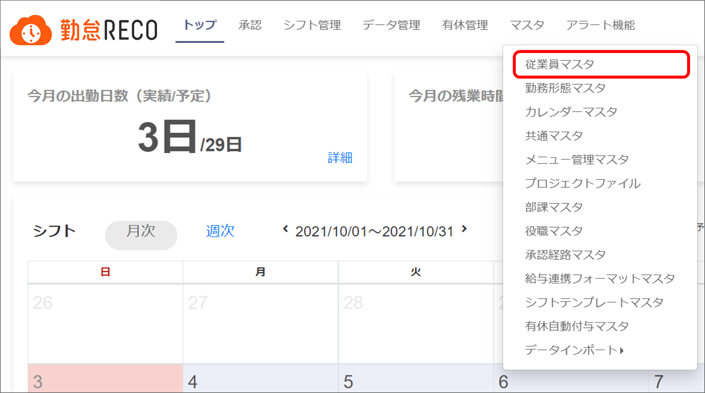
「従業員マスタ」画面が表示されます。
［新規作成］ボタンをクリックする
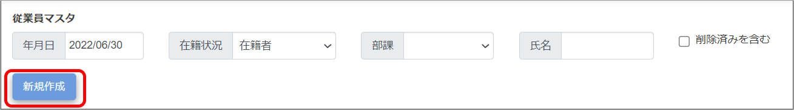
「従業員マスタ-新規作成」画面が表示されます。
各項目を入力する
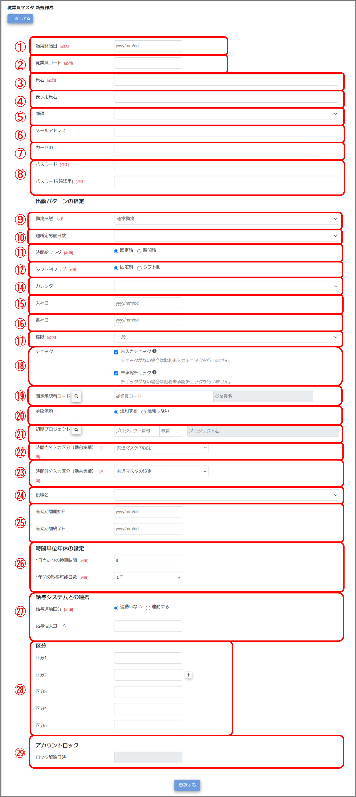
適用開始日
従業員の設定を適用開始する日付を入力します。
※過去の有休が残っている場合は、その有休付与日より過去の日付にしてください。
※別の従業員の固定承認者に設定したい場合は、その従業員の適用開始日以前の日付を設定してください。
ヒント |
従業員マスタには、適用開始日ごとの情報を持たせることができます。 ある日付を境に役職や所属が変更される場合は、従業員マスタを確認・編集するの操作で、「更新設定」に新しい適用開始日をご登録ください。 適用開始日より前の日付は、勤怠RECOにログインができませんので、新規従業員登録時はご注意ください。 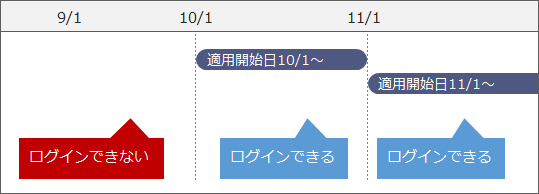 |
|---|
従業員コード
従業員コードを入力します。設定後の変更はできません。（一意／最大255文字）
マスタ一覧ではコード順で従業員が表示されます。
ヒント |
Shift_JIS に変換できない文字やファイル名に使用できない文字は、以下のデータ作成時に「_」や「？」に変換されます。
|
|---|
氏名
従業員の氏名を入力します（最大255文字）。
ヒント |
Shift_JIS に変換できない文字やファイル名に使用できない文字は、以下のデータ作成時に「_」や「？」に変換されます。
|
|---|
表示用氏名
配信メール、および勤怠RECOの各種画面に表示される、従業員の表示氏名を入力します（最大255文字）。
戸籍上の本名ではなく、通称を利用したい場合に入力してください。表示氏名が入力されていない場合は、「氏名」が表示されますので、通称を利用されない場合は入力不要です。
※個人別日別勤務報告書、年次有給休暇管理簿、CSV出力、勤務データ一覧表には、表示用氏名を入力しても「氏名」が反映されます。
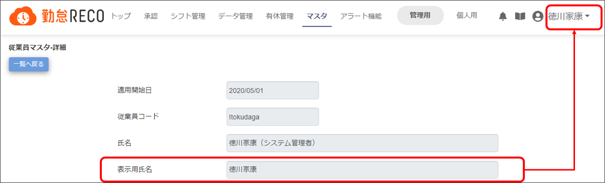
部課
ドロップダウンリストから従業員が所属する部課を選択します。
申請承認機能を使用する場合は、部課を設定する必要があります。
メールアドレス
メールアドレスを入力します（最大255文字）。メールアドレスを設定すると、以下が可能になります。
［パスワードをお忘れの方はこちら］の利用
勤怠承認関連の通知メール受信
申請承認関連の通知メール受信
残業超過、有休取得未達アラート通知メール受信
カードID
打刻機で紐付けしたICカードのカードIDが自動的に登録されます。
新規登録時は入力不要です。
紐付けを解除する場合は空白にしてください。
ヒント |
紐付け解除の際は、対象従業員に設定された「適用開始日」全ての「カードID」欄を空白にする必要があります。 ※「年月日」に、対象従業員に設定された「適用開始日」のうち一番古い日付を指定して検索すると、「変更日付」項目に全ての「適用開始日」が表示されます。 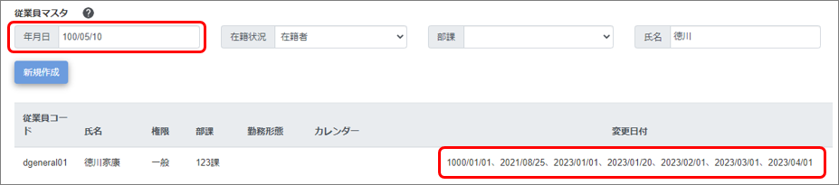 |
|---|
パスワード
勤怠RECOにログインするときに使用するパスワードを設定します（最大255文字）。
※半角英小文字、半角英大文字、数字の3種類すべてを含む8文字以上
※従業員コードと同じ値は設定不可
勤務形態
従業員の通常の勤務形態を指定します。（「シフト制フラグ」で「シフト制」を選択した場合は表示されません。）
勤務形態マスタで設定済みの勤務形態を選択します。
週所定労働日数
従業員の週所定労働日数を指定します。
週5日勤務の場合は「通常勤務」を選択します。
時間給フラグ
従業員に時間給制を適用するかどうかを選択します。
時短勤務の従業員用の設定です。詳細は以下のヒントをご覧ください。
「時間給」を選択した場合は、「勤務終了時刻」入力欄が表示されますので、設定してください。
シフト制フラグ
従業員にシフト勤務制を適用するかどうかを選択します。
シフト制を選択した従業員には「シフトを管理する」でシフトを登録する必要があります。
ヒント |
従業員マスタの「勤務形態」「時間給フラグ」「シフト制フラグ」「勤務終了時刻」は、利用する勤務形態によって次のように登録します。 【例】
|
|---|
勤務終了時刻
「時間給フラグ」で「時間給」を選択した場合の勤務終了時刻を入力します。
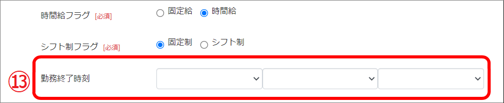
カレンダー
会社独自の勤怠スケジュール（休日・法定休日・祝日）を適用するための項目です。ドロップダウンリストからカレンダーマスタで登録した名称を選択してください。
選択したカレンダーマスタがトップ画面のカレンダーに反映されます。
※「共通マスタ」で、「共通カレンダー」を「使用する」に設定している場合は「全社共通カレンダー」が設定され、選択できません。
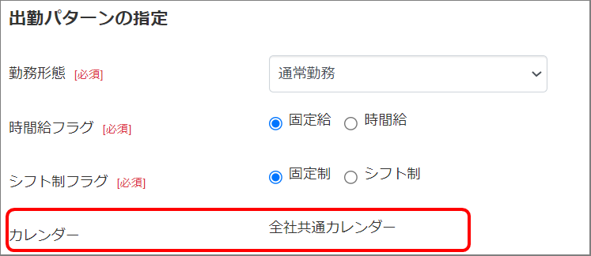
入社日
従業員の入社日付を入力します。設定した入社日より前は、勤怠RECOにログインできません。
ヒント |
入社日と週所定労働日数を設定すると有休自動付与機能を利用できます。 |
|---|
ご注意 |
打刻機でICカードの登録を行う際、入社日が未来日となっていると、ICカードの登録ができません。入社予定の従業員へICカードを登録する際は、ICカードを登録した後に入社日を入力してください。 |
|---|
退社日
従業員の退社日付を入力します。設定した退社日より後は、勤怠RECOにログインできません。
ヒント |
従業員マスタに設定された退社日が過ぎると次のようになります。
|
|---|
権限
従業員の権限を指定します。
一般ユーザー・・・自身の勤怠の入力、閲覧が可能です。
承認者・・・自身の勤怠の入力、閲覧、承認作業、シフト管理が可能です。
課長級・・・承認者権限に加え、各課情報の閲覧が可能です。
人事担当者・・・課長級の権限範囲に加え、各従業員の勤務入力訂正（マスタ登録以外）が可能です。
システム管理者・・・システム全体のメンテナンス、各従業員の勤務の修正が可能です。
権限ごとに操作できるメニュー一覧はこちら。
チェック
勤務情報のチェックを行うかどうかを選択します。
未入力チェック・・・勤務未入力チェックを行うかどうかを選択します。
未承認チェック・・・勤務未承認チェックを行うかどうかを選択します。
固定承認者コード
従業員に対する勤怠承認者を設定します。
※承認者の適用開始日または入社日が、被承認者の適用開始日より後である場合、その人を承認者として設定できません。
承認依頼
承認者に勤怠承認依頼メールを通知するかどうかを選択します。「通知する」に設定すると、従業員が勤怠を登録するたびに、承認者宛にメール通知が届きます。日次で承認依頼メールを受け取りたい場合は「通知する」を設定してください。
※従業員マスタで「通知する」設定にしても、共通マスタで「通知しない」設定にした場合は通知されません。
※「固定承認者コード」で設定された承認者がメール通知対象になります。「固定承認者コード」が設定されていない場合は、「初期プロジェクト」の承認者がメール通知対象になります。
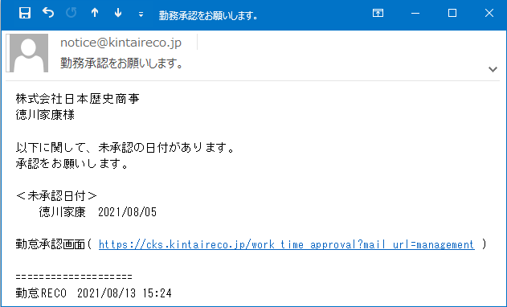
初期プロジェクト
［プロジェクトファイル］で設定された工数管理したいプロジェクトを選択します。
初期プロジェクトが登録されている場合、出勤・退勤の打刻を行うと、プロジェクト開始日時・終了日時が日報に自動で登録されます。
※「固定承認者コード」が設定されていない場合、「初期プロジェクト」の承認者が勤怠承認者となります。
時間内分入力区分
勤務実績時間（勤務時間内）を何分単位で丸めるかを設定します。
【例】 15分単位の場合
出勤打刻 8:47 → 9:00出勤となります。
退勤打刻 17:14 → 17:00退社となります。
時間外分入力区分
勤務実績時間（勤務時間外）を何分単位で丸めるかを設定します。
勤怠更新を使用しない場合は、勤務時間外の打刻すべてが丸め対象になります。
勤怠更新を使用する場合は、勤務時間外かつ残業申請時間内の打刻が丸め対象になります。
役職名
現在役職マスタに登録中の役職名を選択し、その役職の有効期間開始日と終了日を設定します。
役職を設定すると、申請承認機能の承認対応ができます（権限を承認者以上に設定した場合のみ）。
有効期間
設定した役職名が適用される期間を設定します。
時間単位年休の設定
時間単位の年次有給休暇を設定します。
1日当たりの換算時間
1日分の年次有給休暇に対応する時間数を入力します。
換算時間を8時間に設定すると、有休1日分は「8時間の時間有休」として扱われます。所定労働時間数に端数がある場合は、切り上げた日数を入力してください。
1年間の取得可能日数
1年間で取得できる時間単位年休の日数上限を入力します。時間単位年休を使用しない場合は0日を設定してください。
ご注意 |
時間有休を取得した後に「1日当たりの換算時間」を変更しても、既に付与、取得した有休の換算時間は変わりません。 |
|---|
給与システムとの連携
給与計算システムとの連携を行うかを設定します（共通マスタで「給与情報管理区分」を管理しないに設定すると、この項目は表示されません）。
給与連動区分・・・給与計算システムと連動するかどうかを選択します。
「CSV出力」や「給与連携ソフトCSV出力」で対象従業員の勤怠データを出力したい場合は、「連動する」に設定します。
給与個人コード・・・給与計算システムへ当該従業員を連携する場合は、給与個人コードを入力します。
区分
必要に応じてメモとしてご使用ください。
アカウントロック
一定回数ログインに失敗すると、対象のアカウントはロックされ、ロックが解除される予定の日時が表示されます。すぐにロックを解除したい場合は、［クリア］ボタンをクリックして日時を削除し、登録を行います。
［登録する］ボタンをクリックする
画面上部に「登録が完了しました。」とメッセージが表示され、画面が「従業員マスタ-詳細」画面に切り替わると従業員マスタの修正情報の登録が完了です。
ヒント |
|
|---|
登録済みの従業員マスタ情報を確認したり、修正して上書きしたりします。
ヒント |
|
|---|
［マスタ］をクリックし、［従業員マスタ］をクリックする
「従業員マスタ」画面（登録済みの従業員マスタ一覧）が表示されます。
確認したい従業員の氏名を入力し［検索］ボタンをクリックする
退職した従業員を検索する場合は「在籍状況」をすべてまたは退職者に変更します。
削除した従業員を検索する場合は「削除済みを含む」にチェックを付けます。
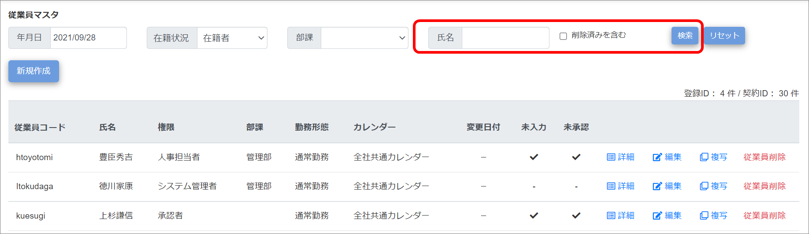
情報を確認したい従業員の行の［詳細］をクリックする
「従業員マスタ-詳細」画面が表示されます。
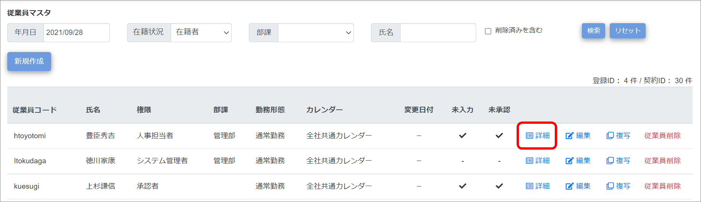
情報を確認し、［一覧へ戻る］ボタンをクリックする
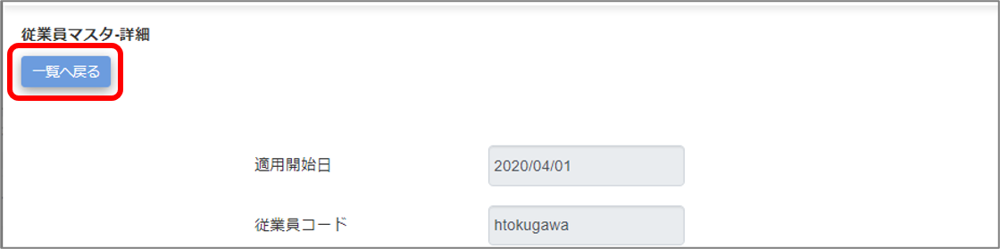
「従業員マスタ」画面が表示されます。
修正が必要な場合は、従業員の行の［編集］をクリックする
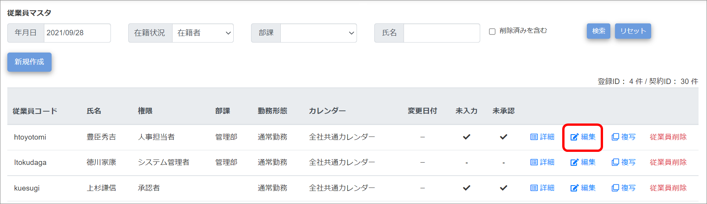
「従業員マスタ-編集」画面が表示されます。
左側の「現在の設定」を確認しながら、右側の「更新設定」に修正情報を入力する（①）
「適用開始日」を入力し（②）、項目名左の□をクリックして「✓」を表示させてから（③）入力してください。
右側の「適用開始日」で変更日を指定できます。
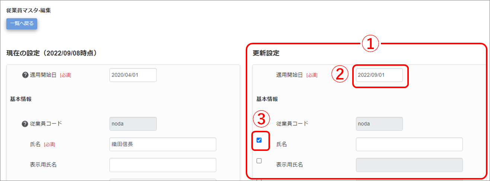
ご注意 |
「更新設定」の適用開始日を入力すると、役職期間の重複を避けるために「更新設定」の役職名、有効期間開始日、有効期間終了日に自動でチェックがつきます。また「現在の設定」の有効期間終了日も適用開始日に合わせて変更されます。 【例】有効期間終了日が2022/12/31の従業員に対し、「更新設定」の適用開始日を2022/12/5で設定すると、「現在の設定」の有効期間終了日と「更新設定」の有効期間開始日が2022/12/5、「更新設定」の有効期間終了日が2022/12/31となる。 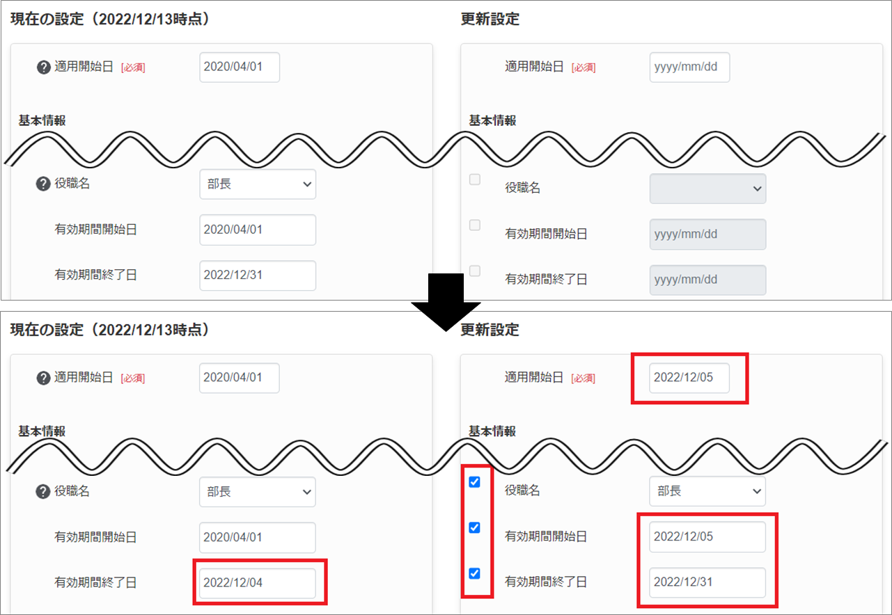 |
|---|
ヒント |
アカウントロックを解除する場合は、クリアボタンをクリックして解除日時を削除し、画面下の［登録する］ボタンをクリックします。 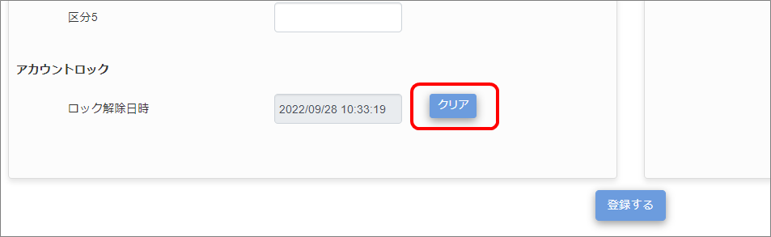 |
|---|
修正内容を確認し、画面下の［登録する］ボタンをクリックする
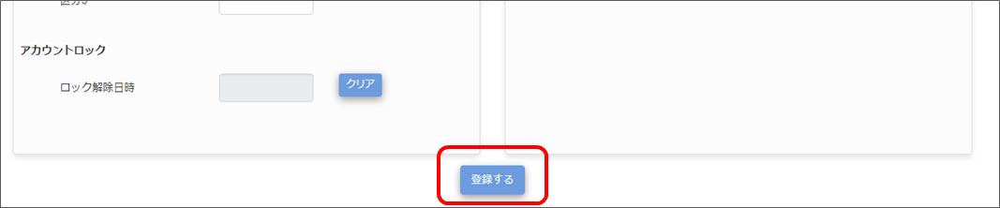
画面上部に「登録が完了しました。」とメッセージが表示され、画面が「従業員マスタ-詳細」画面に切り替わり、従業員マスタの修正情報が登録されました。
退職した従業員の情報を削除します。
ご注意 |
退職した従業員の従業員マスタは退職後すぐに削除しないでください。 従業員マスタを編集して「退職日」を入力し、一定期間情報を保持した後に削除することを推奨します。 編集方法について詳しくは、「従業員マスタを確認・編集する」を参照してください。 |
|---|
ヒント |
初期登録時のシステム管理者は削除できません。 |
|---|
［マスタ］をクリックし、［従業員マスタ］をクリックする
「従業員マスタ」画面が表示されます。
削除したい従業員の行の［従業員削除］をクリックする
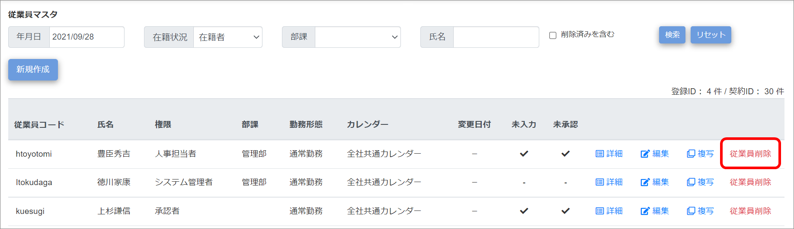
画面上部に「削除が完了しました。」とメッセージが表示され、削除した従業員の行が一覧から消えます。
削除を元に戻したい場合は、「削除済みを含む」にチェックを付けて検索し、「従業員マスタ-編集」画面で削除済みチェックを外して登録してください。